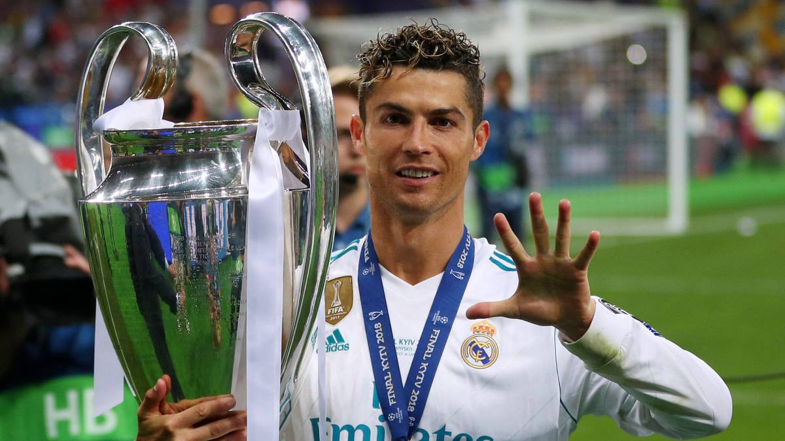
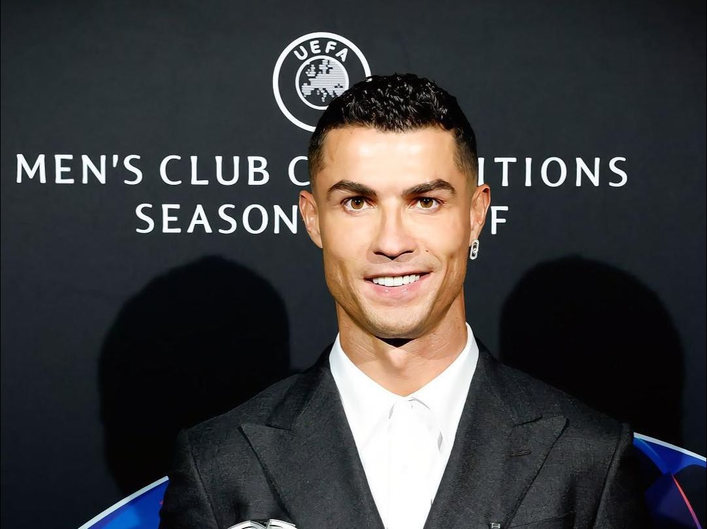
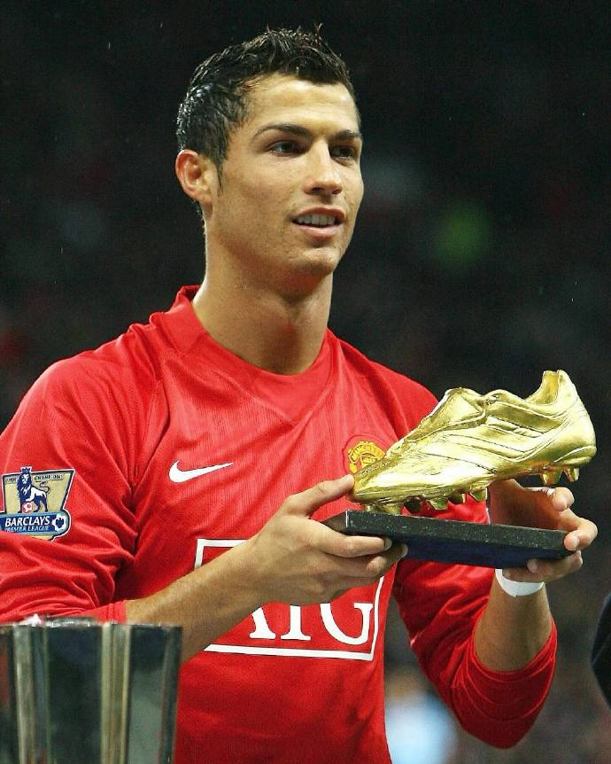

|  | |||||
| 首页 | 成长经历 | 职业生平 | 重要荣誉 | 精彩瞬间 | 精神与影响力 |
足坛最璀璨的巨星，绿茵场的刺客之王 ——克里斯蒂亚诺·罗纳尔多 |
|||||
| 1. 团队荣誉 俱乐部荣誉 - 曼联 - 欧洲冠军联赛亚军：2008-2009赛季 - 欧洲冠军联赛冠军：2007-2008赛季 - 英超联赛冠军：2006-2007赛季、2007-2008赛季、2008-2009赛季 - 英超联赛亚军：2005-2006赛季 - 足总杯冠军：2003-2004赛季 - 足总杯亚军：2004-2005赛季、2006-2007赛季 - 联赛杯冠军：2005-2006赛季、2008-2009赛季 - 世俱杯冠军：2008赛季 - 社区盾杯冠军：2007赛季、2008赛季 2. 俱乐部荣誉 - 皇家马德里 - 西甲联赛亚军：2009-2010赛季 3. 国家队荣誉 - 葡萄牙 - 欧足联2004欧洲杯亚军 - 法国2003年土伦杯冠军 4. 个人荣誉 2008-2009赛季 - 法国《队报》欧洲银球奖 - 2009国际足联世界足球先生第二名 - 2009国际足联年度普斯卡什奖（年度最佳进球） - 2009年国际足联最佳阵容（前锋位置） 2007-2008赛季 - 世界足球先生 - 欧洲金球奖（欧洲足球先生） - 《世界足球》杂志世界足球先生 - 国际球员联合会(FIFPro)2007-2008赛季世界最佳11人 - 国际职业球员联盟(FIFPro) 2007-08赛季最佳球员 - 欧足联冠军联赛官方 2007-08赛季最佳球员 - 欧足联冠军联赛官方 2007-08赛季最佳前锋 - 欧洲金靴奖：31球 - 欧洲冠军联赛最佳射手：8球 - 英格兰超级联赛最佳射手：31球 - 英格兰职业球员联盟(PFA) 2007-08年度最佳球员 - 英格兰职业球员联盟(PFA) 2007-08英超最佳阵容 - 英格兰足球记者协会(FWA) 2007-08年度英超最佳球员 - 英超官方 2007-08赛季最佳球员 - 英超官方每月最佳球员：2008年1月、2008年3月 - 英格兰职业球员联盟(PFA) 球迷票选每月最佳球员：2008年1月 - 曼联俱乐部球员票选2007-08赛季最佳球员 - 曼联俱乐部球迷票选（巴斯比爵士）最佳球员：2007-08 - 曼联俱乐部年度最佳进球：（曼联vs 朴茨茅斯 任意球）2007-08 2006-2007赛季 - 英格兰职业球员联盟(PFA) 2006-07年度最佳球员 - 英格兰职业球员联盟(PFA) 2006-07年度最佳年轻球员 - 英格兰职业球员联盟(PFA) 2006-07球迷票选年度最佳球员 - 英格兰职业球员联盟(PFA) 2006-07英超最佳阵容 - 英格兰足球记者协会(FWA) 2006-07年度英超最佳球员 - 英超官方 赛季最佳球员 - 英格兰超级联赛助攻王 14次 - 英超官方 每月最佳球员：2006年11月、2006年12月 - 英格兰职业球员联盟(PFA) 球迷票选每月最佳球员：2006年10月 - 曼联俱乐部 巴斯比爵士最佳球员奖 2006-2007 - 欧洲足球先生曼联俱乐部 球员票选最佳球员 2006-2007 - 葡萄牙2007年度最佳足球运动员 - 欧足联 2007年度最佳阵容 - 《法国足球》杂志 欧洲最佳球员评选（金球奖）2007 银球奖 - 国际足联世界足球先生2007 第三位 - 国际职业球员协会 2006-2007年度最佳阵容 2005-2006赛季 - 英格兰职业球员联盟(PFA) 2005-06英超最佳阵容 - 国际职业球员协会 球迷票选2005-2006年度最佳年轻球员 - 曼联葡萄牙体育人物奖2006 - 曼联俱乐部 年度最佳进球 2005-2006 2004-2005赛季 - 国际职业球员协会 球迷票选2004-2005年度最佳年轻球员 2003-2004赛季 - 曼联俱乐部 巴斯比爵士最佳球员奖 2003-2004 - 欧足联2004欧洲杯最佳阵容 |
  |